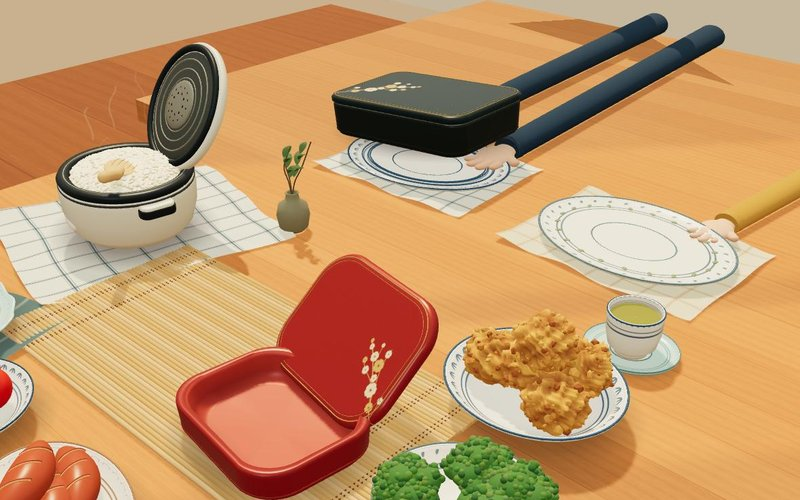
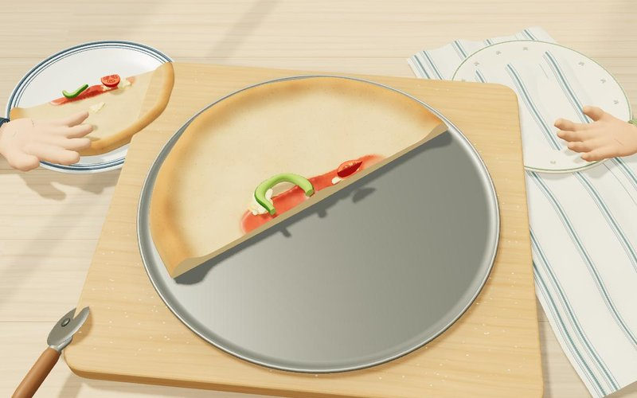

お菓子

s-17h-v1
おべんとう つめつめ（初版） 不合格：袖が棒状で天板を貫通、受け手の手がふた・箱に最大4,466頂点めり込む、ふたが米を貫通、手本の終点で離すと入らず瞬間で戻る、場面転換でカメラが一度に60°

s-18h-v1
のせのせ ピザ（初版） 不合格：切れが宙に浮き皿で0.585倍に縮む、手が皿・切れに最大4,772頂点めり込む、器の重なり、焼いてもチーズが見えない、入炉で台所の物が消える・縦画角92°、次の生地が差し替わる